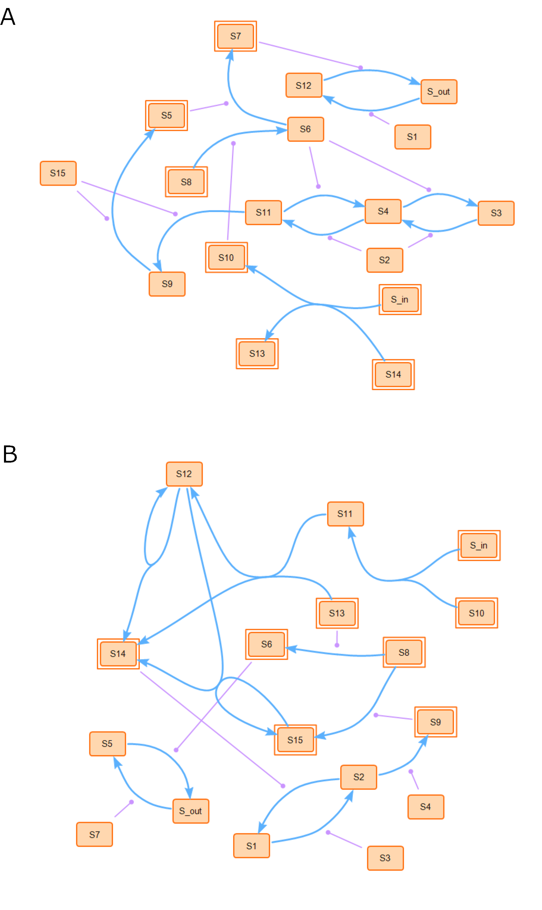
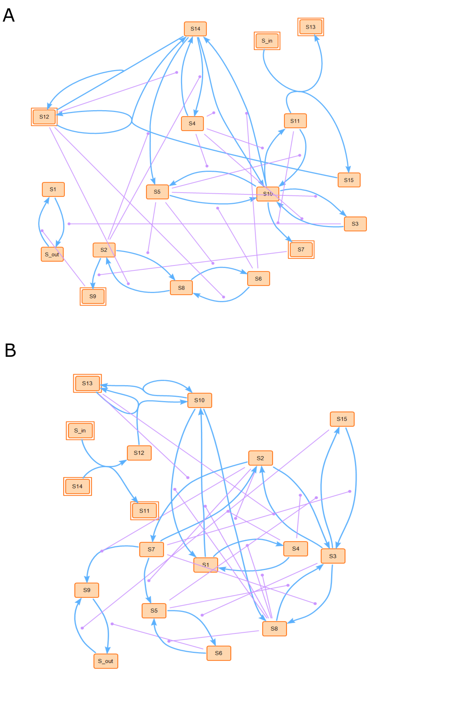

Visualization examples¶
Here are the six types of reaction network motifs and some generated artificial random signaling network examples shown as below. The figures were generated by SBcoyote version 1.5.0.
Reaction network motifs¶
The synthetic random networks were composed of six types of reactions:
catalyzed uni-uni (A),
binding and unbinding reactions (B, C),
exchange reactions (D),
catalyzed phosphorylation-dephosphorylation (E),
dual phosphorylation-dephosphorylation cycles (F).
{kind=link}
Artificial random signaling network examples¶
1) Reaction networks with 15 species and 11 reactions.
The figure below illustrates two examples of randomly generated signaling networks. Figure A included four types of chemical reaction motifs. Species were labeled S1 to S15. The reactions included four uni-uni processes: S6 → S7 catalyzed by S5, S8 → S6 catalyzed by S10, S9 → S5 catalyzed by S15, and S11 → S9 catalyzed by S15; one bi-bi reactions: S_in + S14 → S10 + S13; one single phosphorylationdephosphorylation cycle: S12 ⇋ S_out catalyzed by S7 and S1; and one dual phosphorylation-dephosphorylation cycle S11 ⇋ S4 ⇋ S3 catalyzed by S6 and S2. Figure B included the other two types of chemical reaction process, namely one uni-bi reaction: S12 → S12 + S14 and one bi-uni reaction: S_in + S10 → S11. As shown, all the random signaling networks had 15 species in addition to input and output species, with 11 reactions.
{kind=link}
2) Reaction networks with 15 species and 22 reactions.
The figure below illustrates two examples of randomly generated signaling networks. Figure A included five types of chemical reaction motifs. Species were labeled S1 to S15. These include three uni-uni processes: S2→S9 catalyzed by S7, S14 → S5 catalyzed by S2, and S10 → S7 catalyzed by S11; one bi-uni reaction: S14 + S12 → S12; two bi-bi reactions: S11 + S_in → S15 + S13 and S12 + S15 → S12 + S14; two single phosphorylation-dephosphorylation cycles: S1 ⇋ S_out catalyzed by S3 and S9 and S4 ⇋ S14 catalyzed by S2 and S12; and three dual phosphorylation-dephosphorylation cycles S2 ⇋ S8 ⇋ S6 catalyzed by S5 and S12, S3 ⇋ S10 ⇋ S11 catalyzed by S4 and S5, S5 ⇋ S10 ⇋ S14 catalyzed by S4 and S6. Figure B included the 6th type of chemical reaction process, namely one uni-bi reaction: S10 → S10 + S13. As shown, all the random signaling networks had 15 species in addition to input and output species, with 22 reactions.
{kind=link}